Thoughts for Food: Food Image Caption Generation
Abstract
Image caption generation has seen increased development due to its many applications and its place as a crossroads for computer vision and nlp communities[3,9]. Where image detection algorithms such as convolutional neural-nets are good at determining a specific image entity and location, sentiment, context and style are frequently lacking in generated captions[1,2,6,9]. Recent work has focused efforts to specifically augment LSTM architecture, forcing a specific sentiment or style into the image caption [9]. We design a system that is trained within one specific category of images (food) in order to discern the differences in sentiment, style and/or context based on training and testing datasets. By implementing a CNN+LSTM neural network architecture trained on images taken from MS-COCO, SentiCap, Yummly, and Reddit, specifically datasets comprised of varying sentiment or style, we hope to expose the differences in generated captions for a given category (in our case, food). We also look to expose outcome differences and quality between variants of our base CNN+ LSTM model in which one version goes for a deeper approach with an additional LSTM and another goes wider with bi-directional LSTM substitutions.
Keywords: Image captioning, CNN + LSTM, sentiment
Introduction
Image caption generation is a quickly evolving topic that enables a picture to be worth a thousand words. The problem of generating a cohesive image caption is that a model must not only analyze a picture to determine subjects/scene/objects but also generate a sentence describing these elements. This problem has many implications today including visual intelligence for chatbots, assisting the visually impaired as well as image search.
The work as of today has focused on the generation of captions utilizing large data sources across all types of pictures[9]. Some emphasis has been placed on specifying the language model in order to generate captions with sentiment or style[1,2]. There has not however been a focus on the relation of generated captions to the style or sentiment of the image itself. Reddit is a very popular news website that is structured with numerous subreddits focusing on a specific topic. Three subreddits that will be the focus of this research are ‘food’, ‘foodporn’ and ‘shittyfoodporn’. All three subreddits contain food as their main image depiction, but have a specific style or sentiment related to their images.
We propose a framework that employs the state of the art image caption generation model (CNN + LSTM) using images specific to a subreddit (but under the same category - food) to analyze the generated captions for style and/or sentiment. We do this under the motivation that industries in particular sectors (e.g. Yelp) wanting to get into more tailored detail about the images they have, and in some sense, add “flavor” to their captions.
Background
Most papers in the caption generation space utilize the MSCOCO dataset [5], as it is a large and comprehensive database of images, each containing five different captions. The breadth and quality of the dataset makes it very popular for deep learning approaches which improve with dataset size.
Image caption generation has historically been a difficult problem to overcome, because it first relies on determining what subjects or objects are contained in the image, and goes further by attempting to create a sentence describing the picture. The first substantive image generation method was published under the title ‘Show and Tell’ title by Bengio et. all [4]. These authors were one of the first to successfully combine a CNN (for determining what was in the image) with a RNN (containing a language model for language generation). Show and Tell used a LSTM as their RNN of choice in order to handle vanishing/exploding gradients [4].
‘Show and Tell’ popularized the CNN + RNN framework and did a good job of factually describing the image in caption format. Borrowing from machine translation framework, the encoder-decoder framework was adjusted from taking a RNN that encodes a language and is decoded to a target language via another RNN to a parallel framework in which a CNN encodes and image and RNN decodes into a caption/description [4]. There were a number of teams that looked at sentiment and style with regards to the caption generation problem. The ‘SentiCap’ paper had the objective of including sentiment within the caption [1]. This paper uses a pre-trained CNN+LSTM from a large dataset (MSCOCO) as well as another LSTM cell (captions with sentiment subset dataset) and combines the two outputs to generate captions with sentiment [2]. ‘StyleNet’ similarly uses the CNN+LSTM architecture however it creates different caption styles in the embedding matrix which is split into three different weight matrices. One of these weight matrices is specific to the style that the NLG model is trying to predict, while the other two are shared across all examples and LSTM cells [2]. This method was named a ‘Factored LSTM’ model by the authors.
One element common across all efforts towards natural language generation is the measure of accuracy or success. Unlike natural language processing, the accuracy of a given model can be difficult to determine because the accuracy/relevance of a caption can be up to human interpretation. In a number of papers manual grading of the captions has been utilized. For automated metrics BLEU is likely the most popular and was arguably the first to deliver score on par with human judgment[8,3,7]. BLEU is a modified form of precision where a specific word can only occur a maximum of two times in the evaluated generated text. BLEU and many other automatic metrics can be prone to a n-gram overlap sensitivity, where two sentences that mean the same thing but don’t share words would be evaluated poorly[7]. The SPICE score attempts to better approximate caption accuracy by analyzing the semantic propositional content of a caption using a scene graph but has been recognized as highly dependent on the parsing accuracy[7,10].
Approach
The state of the art in image captioning currently is built upon a CNN + LSTM architecture, we will conform to this structure. From the ‘Show and Tell’ paper the following LSTM layout was depicted:
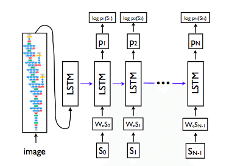
Our architecture modifies this slightly, by introducing the image features into each LSTM cell and having them persist(not only the first). This “multimodal” architecture modification has been discussed in literature and has shown to assist in caption generation in some cases [3][11][6].
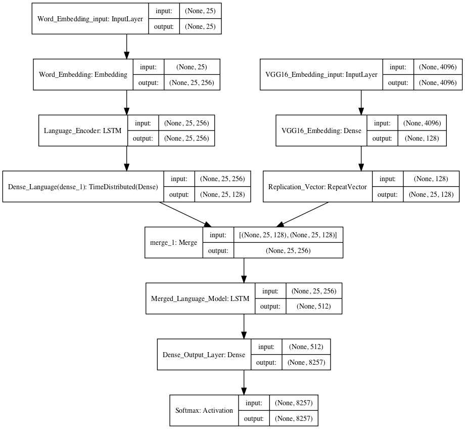
Baseline
The CNN or image encoder uses the pre-trained VGG16 model. By using a pre-trained model we were able to focus efforts on the language model. We were also willing to set concerns of this choice aside due to experimental reports of success suggested in using pre-trained CNN models [3,4]. Rather than utilizing the output of the VGG model (which is a softmax layer in order to determine the probabilities of image features), our model removes the softmax layer and encodes the image in an array of size 4096. This array is fed to a dense network that embeds it to a 128 dimension image embedding and the embedding is fed via a layer merge with the language model when training the overall image captioning model. The choice to merge and persist features comes both from the success reported [11,19] but also for sake of convenience in implementation as well as reduced training parameters. We chose to embed the images into a smaller dimension space as we persist the image features into the sequence and although LSTM’s are known to capture long term dependencies better than their vanilla RNN counterparts, we stuck to the safe side of shorter sequences due to smaller data.
The word embedding phase uses a 256 dimension word embedding learned on the image captions used in training. We chose to learn the embedding rather than use a pre-trained word embedding (ie word-to-vec) due to the data being domain specific as well as concerns of properties pre-trained embeddings where crucial details for food such as color are lumped together due to their proximity in vector space as see in class and literature [4,16]. By learning our own word embeddings, we also stipulate the requirement of a large training dataset (otherwise our word embedding won’t be optimized), however words that may be utilized in a image caption may not show up in a pre-trained word embedding which could cause an unknown word embedding.
Seeing as our dataset isn’t as large, and the food domain had smaller vocabulary size, we chose to deviate from the traditional 512 LSTM encoder suggested by Bengio [4] and opted for 256 as suggested by the research group who adapted their image captioning to a new domain [6]. We then pass the output of the LSTM to a dense layer to further condense the dimension to 128.
These two layers are combined via concatenation and fed into an LSTM cell and finally to a softmax layer. This model attempts to predict the next word in a sequence of words. Captions have been pre-processed to include <start> and <end> tags, with a padded caption length dependent on the longest caption observed in training. As previously mentioned, at each prediction step, both the current image caption prediction as well as the image vector is passed to predict the next word:
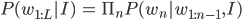
Where $w_(1:L)$
is the generated sentence and I is the image. The loss is computed using the ‘computed crossentropy’ which is defined as:
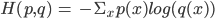
Where p is the true representation and q is the predicted representation of the caption. When testing our dataset we compute accuracy based on the BLEU score which is a popular metric for language generation models and has previously been introduced. For optimization we use RMSProp [6,16] and upon various toy training sets ranging from 5-50,000 captions, found it performed better for this particular problem than the typical SGD [3,4] used. For generating quality captions, we settled on Bengio et. all’s suggested beam search of 3 as it qualitatively seemed to produce agreeable captions with minimal search [4] for these sets as well as offered reduced computational effort compared to larger sizes.
Bi-Directional LSTM
Adding to model complexity for sake of quality we have trained an additional model using a bi-directional LSTM cell rather than the unidirectional as implemented in Show and Tell [4]. The motivation for implementing this wider model comes from theoretical motivations of better understanding context due to consideration of both the “historical context” and “future context” of the target word [14] as well as practical motivations of being competitive to attention, object detection, and other advances in the image captioning domain [15]. The dimensions of the LSTMs, word embedding, and image embedding are kept the same to maintain some grounds for performance comparison. The drawback of this model comes with training time due to an additional backwards LSTM at each of the previous LSTM locations.
Stacked LSTM
Stacking multiple layers of LSTM cells has proven to be an effective way of increasing the accuracy of a language generation problem [13]. In this implementation we stack two LSTM cells (dimension 512) after the merge in order to create a deeper model architecture. While stacking LSTM’s has been shown to increase accuracy, there are also considerations that can reduce the effectiveness of this design. The number of parameters given our training set increased from the baseline parameter of 9.6 million to 11.7 million, inferring that training such a model will take a longer time period. Additionally, because we have developed a deeper model, it will generally perform better on larger datasets and longer training times.
Text analysis and Preprocessing
Our training set is comprised of 118 thousand captions generated from mscoco, reddit (subreddits related to food), yummly and senticap. Below we present text analysis on the original captions set:
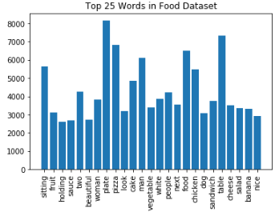
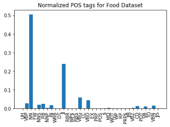

Our captions are comprised of released datasets (mscoco and senticap) as well as image/caption pairs scraped from reddit and yummly. Due to the variance among data sources our captions have different characteristics. From above we can see that the average caption length is 11.38 words (including start and end tags) however our distribution is heavily skewed (x axis limitation enforced on the image above) with a maximum caption length of 670 words from reddit. For our analysis we capped the max caption length at 24 which comprises the 99th percentile in the caption length distribution.
Included in the pre-processing phase to simplify dimensions were the following:
- Removal of words with fewer than two characters
- Removal of punctuation
- Removal of words that only occur one or two times in the corpus
- Convert any numbers to digits token
After preprocessing the text we had an overall vocabulary size of 8,257 words. Our motivation of simplifying the set from such pre-processing comes from a combination of what we have seen for developing neural models in this class as well as the the simplification Bengio et. all and Karpathy et. all make in their respective image captioning models to allow for the embeddings to not be riddled with noise [4,16]. Lemmatization could be used to further reduce the vocabulary size. We elected not to follow lemmatization in an effort to produce human readable captions, rather than lemmatized vocabulary.
Analyzing text by each data source we can see the following:
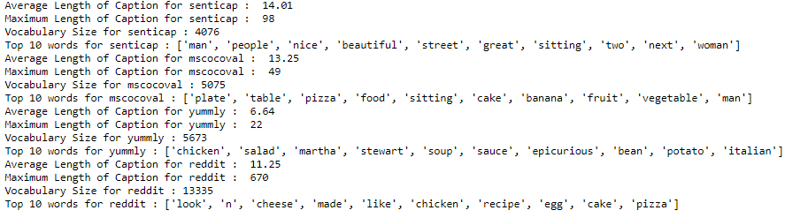
Above is listed vocabulary facts prior to applying language preprocessing steps. Senticap and mscoco (previously compiled datasets) have similar average length and vocabulary size. Reddit stands out with a very large departure in vocabulary size and distribution of caption lengths. By applying the pre-processing steps, the Reddit vocabulary has decreased to 5,645 words with a maximum caption length of 25. Examining the Reddit captions, there are many that don’t appear to be clean image captions but rather comments, which could make caption prediction difficult.
For POS tagging, all datasets show an overwhelming usage of nouns followed by adjectives (see appendix for plot of POS distributions). For image captions, especially pertaining to food this makes intuitive sense. For the senticap dataset we have a higher proportion of adjectives than all other datasets and that yummly has a relative smaller distribution of unique parts of speech. The yummly dataset is comprised of factual food names such as “mushroom and garlic risotto”, hence this distribution makes sense.
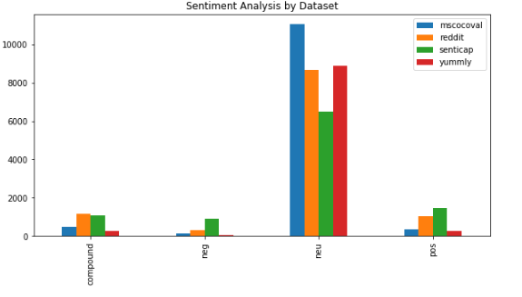
For sentiment analysis, it was observed that the senticap dataset has the highest presence of positive and negative sentiment, which is expected. Overwhelmingly, the captions are neutral, reflecting the fact that many contain objective captions. Reddit also contains a number of sentiment captions.
Accuracy metrics (BLEU scores) reported in the results section are based on n-gram comparison between predicted and reference captions [8,3,7]. For this reason, it is also important to discern the differences between train and test vocabulary.
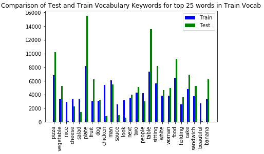
The training set included non-food images, whereas the test set only focused on images that contained food. It can be observed that the test set tends to focus more on food related words (‘plate’, table’) while the train set has more sentiment (principally from the senticap dataset).
Results and Discussion
We have completed training on the three different model architectures previously described using 25 epochs per model on the training set. In order to test our caption models an additional 3,000 images from Reddit were scraped along with additional images from mscoco, comprising a total set of 7,000 images.
Listed below is the BLEU score for each of the models, along with cosine similarity measured between the model predictions and reference captions. As our dataset is composed of images that have not previously been published, we do not reference BLEU scores from other papers.
| Baseline | Bi-Directional | Stacked | |
| MS-COCO - BLEU-1 | BLEU-1: 0.68981
BLEU-2: 0.29337 |
BLEU-1: 0.6925
BLEU-2: 0.2655 |
BLEU-1: 0.67537
BLEU-2: 0.23878 |
| Reddit - BLEU-1 | 0.29919 | 0.35753 | 0.40197 |
| MS-COCO - COS | 0.03525 | 0.02500 | 0.02015 |
| Reddit - COS | 0.01254 | 0.03019 | 0.01019 |
We did observe that for other BLEU scores of higher order n-grams, our BLEU metric was effectively zero. BLEU scores use n-grams in their computation, because our generated predictions did not have similar bi, tri or quad-gram counts our BLEU scores were very low. For the coco dataset, BLEU-1 scores were elevated due to the reference dataset containing multiple (up to 15) captions per image. Therefore, reported results should be analyzed across specific datasets. BLEU-2 scores were also reported for the coco dataset for similar reasons. BLEU scores are common in natural language processing, but do not capture language fluency or sense and can only provide rudimentary quantitative measure. Other metrics such as CIDEr or SPICE have been evaluated in literature to better measure language generation tasks[3,10].
Analyzing the BLEU and cosine similarity metrics above, we can see there is no one particular model that outperforms in every category. What can be observed is how the stacked model, at least in BLEU score, tends to over-predict for the Reddit dataset while under-performing for the COCO dataset. This premise is further supported where we analyze empty predictions.
Example Captions and Comparison
| Image | Reference | Baseline | Bi-Directional | Stacked |
| 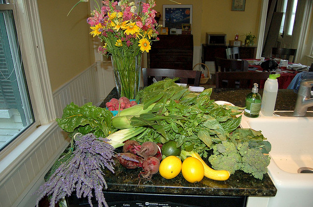 | Flowers and produce sitting on counter top | This is nice lot of orange next with sit next to each background | There is an orange dogs in front of an orange carrots | That looks good |
| 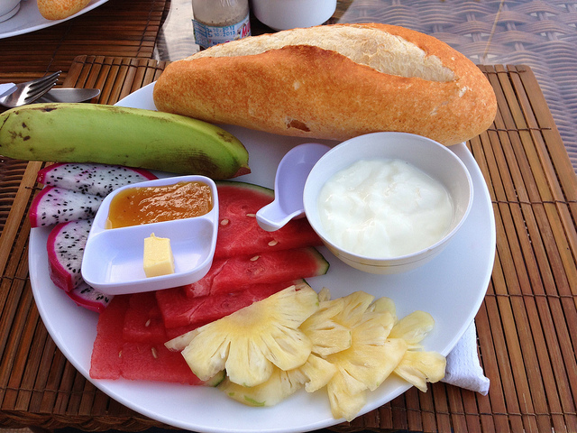 | Plate topped with lots of different kinds of food | Plate of bad food next to the day | This looks delicious | It looks like it looks delicious |
| NaN | NaN | NaN | ||

|
Multiple (ex simple syrup with) | This is nice looking up the shot of the best looking up the birxt next of sauce or part of be... | This is the man that looks delicious | NaN |
Analysis of the produced captions yielded several major patterns. Our training data contained captions with sentiment (as previously shown in the sentiCap and Reddit datasets). This sentiment has been carried into the produced captions as can be seen particularly well in the first caption. Further sentiment analysis is carried out in the language model analysis section.
Another observation that warranted discussion was the level of NaN predictions (or empty strings) that our models gave. During the pre-processing step we removed words that only occurred once in the corpus. For the Reddit train dataset there were some predictions that resulted in an empty caption: “churrrrrrrrro” -> “<start> <end>”. Occurrences of NaN captions are listed below:
| Original (after pre-processing) | Baseline | Bi-Directional | Stacked |
| 1.3% | 1.66% | 6.05% | 25.76% |
It is interesting to note that the baseline model closely followed the same distribution of empty captions compared to the original. This likely might be due to the idea that the baseline is fitting to the human generated captions and matching them to the images rather than generating anything new [4] . However the stacked model had considerably higher proportion of empty caption predictions. It appears as though the stacked model has overfit to this particular caption. In the future we would also replace those words that occured one time in the corpus with the <unk> tag and observe if NaN prediction changes.
When generating captions based on unseen Reddit food pictures, we noticed that the baseline tended to re-predict many already seen captions. For example ‘this looks delicious’ which comes from a Reddit comment incorporated into our training corpus, is observed 65 times in training and is predicted by the baseline model 137 times. Show and Tell also reported that their model tended to predict captions which had previously been observed, and is in-line with our analysis[4]. In many cases, across multiple models, the caption ‘that looks delicious’ or ‘that looks good’ appears with a frequency of 0.0294% in training but 1.6429% in the testing set. It is apparent that our model has overtrained to this particular caption[24].
The last picture given in the table above was observed several hundred times in the training dataset. This means that when the image encoding is fed to the LSTM this particular image has a very high number of valid captions. This example in particular produced either a run on caption (baseline) or a grammatically valid but non-sensible caption. According to Hodosh et al. a pool of captions per image allows the model to better generate sentences, which may explain the prediction of ‘this is the man that looks delicious’, it is difficult to learn from the image encoding, so a language model is relied upon to produce output [23].
There were however a number of incorrectly captioned images, many of which had to do with incorrectly labeled subjects. For instance dog and man occur in the predicted captions 496 number of times. In our training dataset, man was the most common word from the source SentiCap and one of the most common in mscoco. Other captions did not make grammatical sense, such as “person with be couple of front of an dog sitting on the background”. Put together these issues indicate non-optimal performance from the RNN and LSTM units. Further training beyond the 20 epoch would likely prove beneficial as would expanded images and captions for training.
While generating captions, beam search default parameter of 3 was used. Experiments with different beam size values were carried out.
| Image | Captions |

|
Beam Size (3): my plate of peanut chicken
Beam Size (7): my plate of bread with breakfast Beam Size (20): plate of plate of food Beam Size (50): cup of plate of |

The picture and captions listed above tend to show that there is an optimum value of beam size in terms of generated captions. By reading through a number of generated captions qualitatively, it was evident that a beam size of 7 overall generated the most appropriate captions. For the larger 7,000 training captions that were generated, a beam size of 3 was used due to computational limitations. Additionally, caption length appears to vary with beam size.
From analysis of the training corpus, many Reddit posts had an overall shorter word count. When the LSTM model attempts to predict the next word given the current state and preceding word, it may optimize to a longer sequence of words. Whereas for a larger beam size (more potential options being weighed), the shorter sequences overall produced a ‘better caption’ because they fit well with captions trained on reddit data. According to Jia et. all, use of log-likelihood/categorical cross entropy can cause a preference to shorter language generation due to summation over the log-likelihood of more words leading to a smaller value and will also inflate low BLEU scores (BLEU-1 or 2) [12,18]. This is further supported by the relatively shorter captions generated by the models comparing to the reference caption, plots of this analysis are located in the appendix section.
Language Model Comparison
Examining the vocabulary of the predicted captions, it is evident that all three models are repeating words. Vocabulary counts for each of the models compared to the reference is presented here:
| Reference | Baseline | Bi-Directional | Stacked | Bi-Directional SGD | |
| Vocabulary Size | 2873 | 355 | 254 | 209 | 371 |
| Top 5 Words (COCO) | Table, plate, food, pizza, sitting | Front, next, sitting, look, man | Look, side, like, delicious, top | Look, like, NaN, delicious, food | Cheese, sandwich, food, breakfast, fruit |
Overall vocabulary count for every model analyzed is significantly lower than the reference. Chorowski et. all term this phenomenon overconfidence and relate it to the decoding phase of the language model as well as the cross-entropy loss function[25]. The bi-directional model optimized on stochastic gradient descent produced a larger vocabulary than the model trained on rmsprop. Analyzing the stochastic gradient descent algorithm, it can be inferred that the SGD’s fluctuations enable it to jump to a new local minimum, which may prevent the overconfidence minimization previously addressed [26]. One way that we could try and address this diversity issue is “softening” the outputs through a “temperature” greater than 1 [25,29]. Essentially by re-scaling logits by a divisor greater than one before applying softmax, we achieve probabilities that approach a uniform distribution as the temperature hyperparameter increases so that other candidate words have higher chances of being selected [25,29]. The risk for higher diversity in this case is a higher error rate which we would explore in future implementations.
Analyzing the top words in the vocabulary, the reference and bi-directional model trained using SGD contained words related closer to food than the baseline, bi-directional or stacked models. Both the stacked and bi-directional (rmsprop) models frequently use the word ‘delicious’ which was present in the repeated caption ‘this is delicious’ and further identifies potential overfitting[25].
As previously noted, between the train and test sets there is a notable difference in sentiment (more sentiment in the training set where the test is primarily objective). We kept sentiment in the training set because we had wanted to see if the model would allow for transfer learning where sentiment could be carried over and applied to new images that aren’t sentimental [1,4]. Our train sentiment data primarily came from senticap (non-food related), however reddit train data also contained sentiment.

From the plot, it can be observed that the three models contain a higher proportion of sentiment compared to the original or reference captions. This is in line with our intuition and shows that the all models retained sentiment
Hindsight: Other Challenges and Limitations
As no implementation is without flaws, we delve into some discussion to explicitly highlight some of the limitations of our process and the bearing on results beyond those discussed previously. Note that we will suggest possible solutions and next steps to these delineated issues in the final section that follows.
The first is in our dataset itself. Although we picked a specific domain, the breadth in which food can be associated or described and how the captions are described can vary widely. For popular food items such as pizza or cake we end up having quite a few captions to give richer descriptions but then for rarer items such as pig knuckles we end up having essentially 1 caption per image. This is an issue as image captioning models have been found to suffer with
near one-to-one ratios of image to caption [6,23] and hence our models fall back to generic captions such as “this is delicious”. Moreover, from drawing from multiple resources, we bring in conflicts of intent on captioning as we saw that in the COCO dataset and titles of reddit posts that the descriptions were very human-centric; the comments on the other hand tended to focus on opinions of the food while sometimes not even explicitly referring to it. While Yummly is objective and food focused, we mostly have one-to-one image, caption pairs due to the diversity in recipes. In turn, this leads to a mixed bag of captions, particularly default safe captions. Moreover , while over 200,000 captions and 70,000 images isn’t outside the realm of other caption models for training [2,4,6], the given eclectic nature as well as mixed quality points at the underlying difficulty of learning.
Another is in our choice of pre-processing as we chose to truncate rare words below a frequency of three. As discussed briefly above, this causes choppiness in the language as well as gives training captions that are essentially empty, influencing lower quality captions in the model as well (e.g. generating empty captions). In terms of BLEU score, completely removing these words strongly degrades scores when dealing with ground truth captions that have those rare words [20]. For our problem, this means missing out when dealing with novelty foods or misspellings of known foods (e.g. “marshmellow” vs “marshmallow”).
Training time (or number of epochs depending how it’s thought about) was also another practical limit as well as a limitation. With a batch size of 128 and 30 epochs, we hit about 50,000 iterations, which falls short of reported iterations ranging from 70,000 [12] to 100,000 and well beyond [4,6]. We used a multi-cpu environment due to trouble setting up a gpu environment which added additional days to training time as well as escalated costs.
Foresight: Conclusion and Next Steps
Beyond just collecting more data, we believe the quality could be increased in several ways. For Reddit data specifically, one thought was to augment comments with captions by concatenating the two so as to have a much higher chance of mentioning the food itself in the caption. A more advanced thought was to use coreference resolution to map the food name into the reference (e.g. title: “pineapple pizza” comment: “this looks delicious” → new caption: “pineapple pizza looks delicious”). Doing such would allow for capturing more comments per image and increasing the effective number of captions per image. Another thought is to take a bottom up approach by focusing on particular cuisines /styles of food (e.g. American, Chinese, etc.) to reduce variability/complexity by taking a subset of our current data and continuing to add relevant samples.
To combat the rare word problem/pre-processing limitation, we expect to turn to insights from machine translation and language modeling in general. A simple but plausible first step would be to add <unk> as we have seen throughout class. This would at least immediately mitigate/eliminate the generation of empty captions as we have seen. A step up would be the “positional unknown” [20] in which an unknown word is given the tag <unk_i> where i is the position in the target sentence. Another promising but more advanced option would be using subword language modeling in which we could hypothetically recover “apple” and some <unk> from “pineapple” if we had seen “apple” before and not “pineapple” [21]. The main disadvantage to this would be the effort training a whole new language model.
Finally, for training , we have a few options. The most straightforward would be to continue training the models to 50-100 epochs as well as getting gpu compatibility. Other options include turning to simpler models or models that are easier to train for one reason or another. One method to try would be swapping LSTMs for comparable Gated Recurrent Units or GRUs as they have similar performance but are expected to be faster to train [27]. Finally, reducing down to a simpler model that is domain relevant is an option as well. In “Phrase-based Image Captioning”, Lebret et. all show performance comparable to the classic RNN+CNN structure by instead using CNN + a bilinear model (essentially taking a word2vec like model that embeds image features into phrases and then map to sentences using MLE and Markov order 3 assumptions) [28]. Seeing as the heart of the images we are interested in involve the food item and are typically noun phrases, this may be a simpler, more appropriate route to try in the future.
To take a big picture view, we explored image captioning models of varying complexity and applied them to the domain of food. We also explored how transfer learning with respect to sentiment can produce sentimental captions. Analysis has revealed that continued training of the models would likely produce superior results given the time. While we didn’t attain strongly descriptive captions, we have highlighted a number of lessons learned as well as future opportunities to promote further image caption exploration. Image caption generation has utility in a number of problems including computer vision, and with continued development will further improve caption quality.
Papers/References:
1.Mathews, A., Xie, L., & He, X. (2016). SentiCap: Generating Image Descriptions with Sentiments. AAAI Conference on Artificial Intelligence (pp. 3574-3580). The Australian University NICTA.
2.Gan, C., Gan, Z., He, X., Gao, J., & Deng, L. (2016). StyleNet: Generating Attractive Visual Captions with Styles. Microsoft Research.
3.Rafaella, B., Ruket, C., Elliott, D., Aykut, E., Nazli, I.-C., Frank, K., . . . Barbara, P. (2016). Automatic Description Generation from Images: A survey of Models, Datasets, and Evaluation Measures. Journal of Artificial Research, 409-442.
4. Oriol Vinyals, Alexander Toshev, Samy Bengio, and Dumitru Erhan. Show and tell: A neural image caption generator. CoRR, abs/1411.4555, 2014.
5. Chen, Xinlei; Fang, Hao; Lin, Tsung-Yi; Vedantam, Ramakrishna; Gupta, Saurabh; Dollar, Piotr; Zitnick, C. Lawrence. Microsoft COCO Captions: Data Collection and Evaluation Server (2015). eprint arXiv:1504.00325
6. Jack Hessel, Nicolas Savva, Michael J. Wilber (2015). \ Image Representations and New Domains in Neural Image Captioning. arXiv:1508.02091.Computer Science Dept Cornell University
7. Mert Kilickaya, Aykut Erdem, Nazli Ikizler-Cinbis, Erkut Erdem (2016) \ Re-evaluating Automatic Metrics for Image Captioning
arXiv:1612.07600
8. K. Papineni, S. Roukos, T. Ward, and W.-J. Zhu. Bleu: a method for automatic evaluation of machine translation. InProceedings of the 40th annual meeting on association for computational linguistics, pages 311–318. Association for Computational Linguistics, 2002
_9. Kelvin Xu, Jimmy Lei Ba, Ryan Kiros, Kyonghyun Cho, Aaron Courville, Ruslan Salakhutdinov, Richard Zemel, Yoshua Bengio (2016). Show, Attend and Tell: Neural Image Caption Generation with Visual Attention. arXiv 1502.03044. Computer Science Dept Cornell University. _
10. Peter Anderson, Basura Fernando, Mark Johnson, Stephen Gould (2016). SPICE: Semantic Propositional Image Caption Evaluation. ECCV.
11. Ryan Kiros, Ruslan Salakhutdinov, Richard S. Zemel (2014)
Unifying Visual-Semantic Embeddings with Multimodal Neural Language Models
arXiv:1411.2539
12. https://cs.stanford.edu/people/karpathy/neuraltalk/
13. Kaiming He, Xiangyu Zhang, Shaoqing Ren, Jian Sun (2015). Deep Residual Learning for Image Recognition. Microsoft Research. arXiv: 1512.03385v1
14. Mike Schuster ,Kuldip K. Paliwal (1997). Bidirectional Recurrent Neural Networks. IEEE TRANSACTIONS ON SIGNAL PROCESSING, VOL. 45, NO. 11, NOVEMBER 1997
15. Cheng Wang, Haojin Yang, Christian Bartz, Christoph Meinel (2016). Image Captioning with Deep Bidirectional LSTMs. arXiv:1604.00790
16. Andrej Karpathy,Li Fei-Fei (2015).Deep Visual-Semantic Alignments for Generating Image Descriptions. arXiv:1412.2306
17. A. Graves. Generating Sequences with Recurrent Neural Networks (2013). arXiv:1308.0850
18. Xu Jia, Efstratios Gavves, Basura Fernando, and Tinne Tuytelaars. 2015. Guiding the Long-Short Term Memory Model for Image Caption Generation. In Proceedings of the 2015 IEEE International Conference on Computer Vision (ICCV) (ICCV '15). IEEE Computer Society, Washington, DC, USA, 2407-2415. DOI=http://dx.doi.org/10.1109/ICCV.2015.277
19. Junhua Mao, Wei Xu, Yi Yang, Jiang Wang, Zhiheng Huang, Alan Yuille (2015). \ Deep Captioning with Multimodal Recurrent Neural Networks (m-RNN). arXiv:1412.6632 [cs.CV]
20. Minh-Thang Luong,Ilya Sutskever, Quoc V. Le,Oriol Vinyals, Wojciech Zaremba (2015). Addressing the Rare Word Problem in Neural Machine Translation. arXiv:1410.8206
_21.Tomas Mikolov , Ilya Sutskever , Anoop Deoras , Hai-Son Le , Stefan Kombrink , Jan Cernock (2011).Subword Language Modeling with Neural Networks. \ _
22. Sébastien Jean, Kyunghyun Cho, Roland Memisevic, Yoshua Bengio (2015).On Using Very Large Target Vocabulary for Neural Machine Translation. arXiv:1412.2007
23. Framing Image Description as a Ranking Task:Data, Models and Evaluation Metrics
24. Jiwei Li, Michel Galley, Chris Brockett, Jianfeng Gao, Bill Dolan (2016). A Diversity-Promoting Objective Function for Neural Conversation Models. arXiv:1510.03055v3
_25. Jan Chorowski, Navdeep Jaitly. (2017) Towards better decoding and language model integration in sequence to sequence models. http://dx.doi.org/10.21437/Interspeech.2017-343 _
26. Sebastian Ruder (2017). An overview of gradient descent optimization algorithms. arXiv:1609.04747v2
27. Junyoung Chung, Caglar Gulcehre, KyungHyun Cho, Yoshua Bengio (2014). \ Empirical Evaluation of Gated Recurrent Neural Networks on Sequence Modeling. arXiv:1412.3555
28. Rémi Lebret, Pedro O. Pinheiro, Ronan Collobert (2015).Phrase-based Image Captioning. arXiv:1502.03671
29. Geoffrey Hinton, Oriol Vinyals, Jeff Dean(2015).Distilling the Knowledge in a Neural Network. arXiv:1503.02531
Code Sources:
Base code was adapted from https://github.com/anuragmishracse/caption_generator
Reddit Data collected via Pushshift https://github.com/pushshift/api
Coco Data collected via Coco Api https://github.com/cocodataset/cocoapi
Flikr data http://nlp.cs.illinois.edu/HockenmaierGroup/Framing_Image_Description/KCCA.html
Appendix
Additional graphs and analysis is provided here for reference.
Example images and description of the training dataset:
| Dataset | Description | Image | Caption |
| MSCOCO | Large and popular repository of images. 5 captions per image (objective) |

|
A giraffe standing next to a tree |
| Yummly | Food images scraped from yummly (objective) | 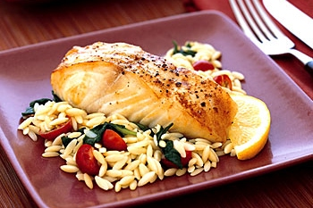 | Baked halibut with orzo spinach and cherry tomatoes epicurious |
| Food images scraped pictures and titles from Reddit (mixed) | 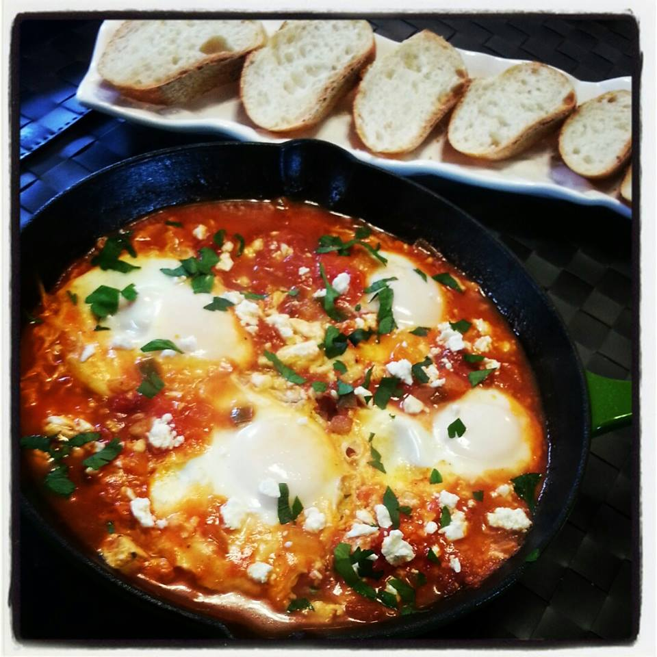 | Shakshuka for breakfast eggs poached in a spicy tomato sauce | |
| SentiCap | Images with sentiment specific captions (subjective) | 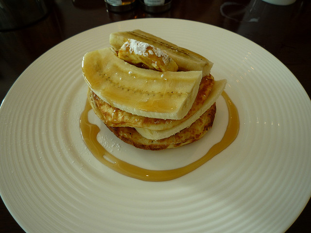 | A delicious food with a drizzle of caramel sauce on a white plate and a banana topping the pastry |
POS tagging for the different training datasets. There is similar distribution between all four datasets with respect to nouns and adjectives.

POS tagging for COCO dataset. The reference dataset has more unique tags (diverse language model) than the produced captions. This is confirmed by the size of the vocabulary, and critical analysis of the produced captions. As mentioned in the text, POS wasn’t as accurate for generated captions, likely due to odd transmissions between words.

Caption length for the COCO dataset predictions. Similar distribution for the max limit, however the average caption length fluctuates for the different models. Baseline model actually increased the caption length in comparison to the reference captions.


Top five predicted nouns and adjectives by model and test set. NLTK was used to provide POS tagging. As can be observed, in many cases the POS tags are incorrect. In many cases, our generated captions do not have english fluency, POS tagging relies on transmission probabilities to accurately predict a sequence of tags. Likely due to the lack of fluency in many captions, the POS tagging algorithm had a hard time correctly mapping POS.
| Reference | Baseline | Bi-Directional | Stacked | |
| COCO - Noun | Banana, fruit, pizza, food, plate | Orange, look, picture, front, man | Plate, dog, man, look, side | Picture, man, dg, food, look |
| Reddit - Noun | Egg, pizza, chicken, dg, ate | Glass, front, man, picture | Plate, picture, man, look, side | Picture, food, recipe, dg, look |
| COCO - Adjective | Top, white, next, vegetable, table | Middle, good, top, front, next | Hot, white, side, top, delicious | Hot, good, next, delicious, nan |
| Reddit - Adjective | Ate, noodle, garlic, hot, cheese | Delicious, top, good, front, next | Nice, side, top, white, delicious | Recipe, next, good, nan, delicious |
An additional, smaller round of training was carried out using the baseline model on a thirty thousand caption set of mscoco at 30 epochs. This represents a cleaner training set compared to what was carried out for the other models which contained reddit posts. A qualitative reading of the captions produced shows that this smaller model tends to generate more fluent english and higher quality captions compared to the other models. For example the baseline model trained on larger training data, for one particular image predicted “this is good looking at dinner in plate” whereas the same model trained on 30,000 mscoco captions predicted “a white plate topped with a bunch of food”. In general the 30k dataset model tended to produce more fluent captions, but lacked the specificity of the contents within an image (deferring to ‘white plate’ and ‘banana’ often). This behavior is likely due to the small training corpus.
BLEU and COS scores for the baseline model trained at 30 epochs using 30,000 captions from the MSCOCO-VAL2014 dataset for training. We can see that this model does much better on the MSCOCO-TRAIN2014 dataset
| COCO | ||
| BLEU | BLEU-1: 0.31793
BLEU-2: 0.09514 |
BLEU-1: 0.68794
BLEU-2: 0.32797 |
| COS | 0.014888 | 0.05356 |